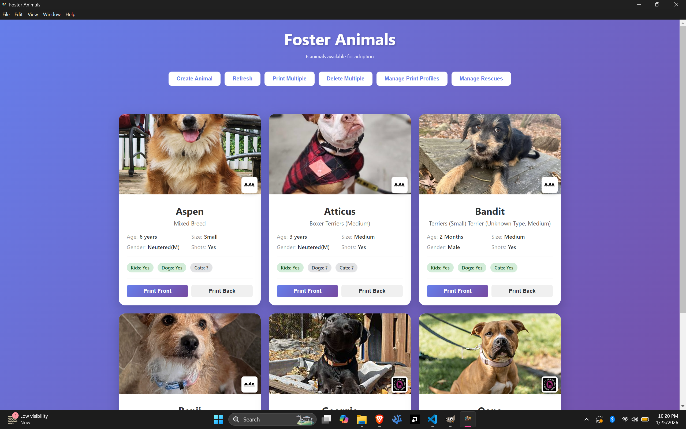
Main Dashboard
View all your adoptable animals in a beautiful grid layout. Each card shows the animal's photo, name, breed, age, and compatibility information at a glance.
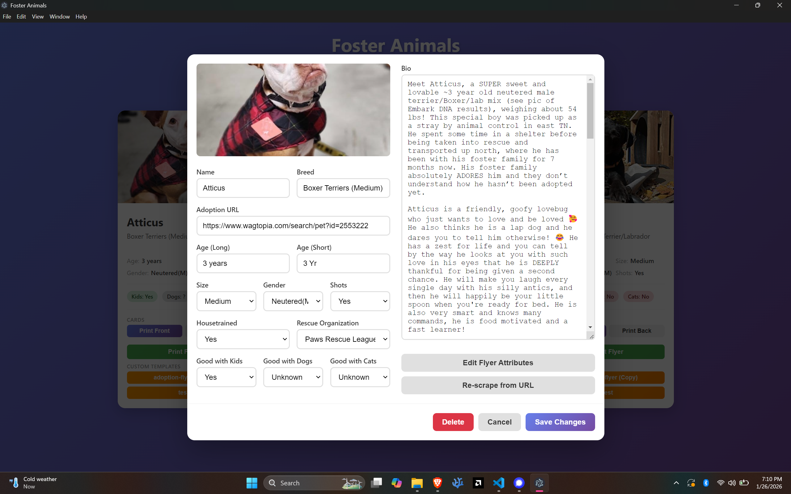
Edit Animal Details
Edit all animal information including name, breed, age, size, vaccination status, house-training, and compatibility with kids, dogs, and cats.
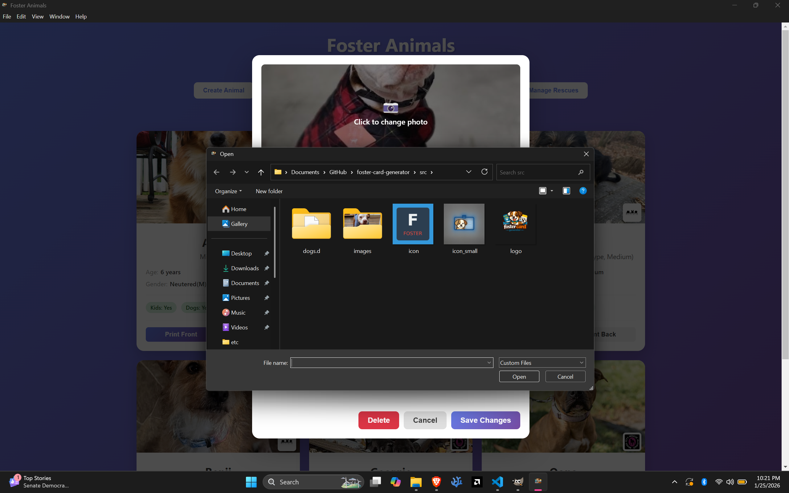
Upload Photos
Easily upload animal photos using the native file picker. Photos are automatically processed and optimized for card printing.
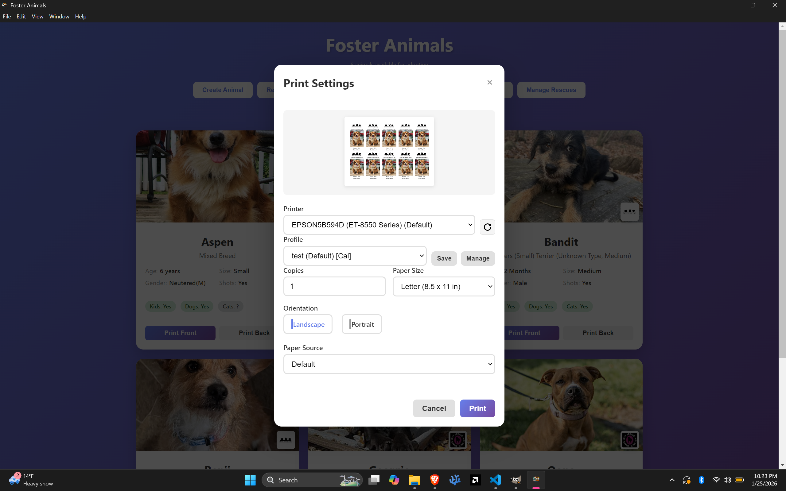
Print Card Fronts
Configure print settings with a preview of the card fronts. Select your printer, paper size, orientation, and number of copies.
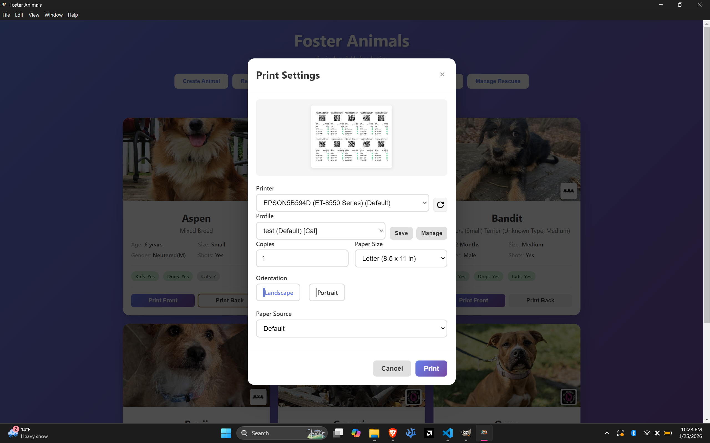
Print Card Backs
Print the backs of the cards with QR codes and detailed animal information. Flip your paper and print for double-sided cards.
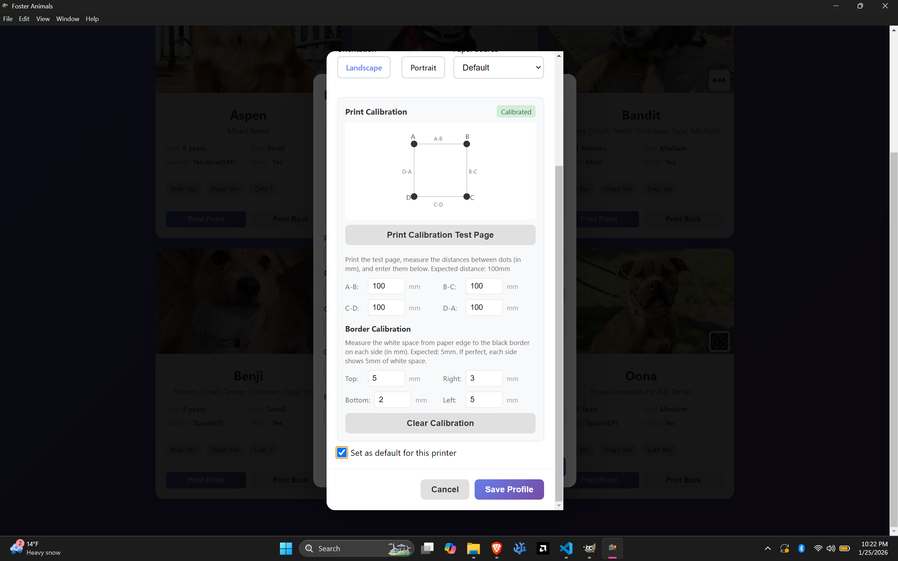
Print Calibration
Fine-tune print alignment with the calibration system. Enter measurements from a test page to ensure cards print perfectly on Avery templates.
Business Card Output
The final printed output: 10 professional business cards per sheet. Front cards feature the animal photo, name, and rescue branding. Back cards include QR codes, adoption URLs, and detailed compatibility information.

Adoption Flyer Output
Full-page 8.5" × 11" adoption flyers featuring a large animal photo, custom personality traits, QR code for easy scanning, and rescue branding.
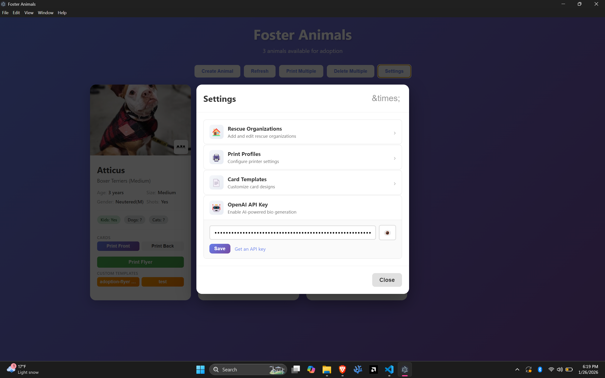
Settings
Configure rescue organizations, print profiles, card templates, and your OpenAI API key for AI-powered features all in one place.
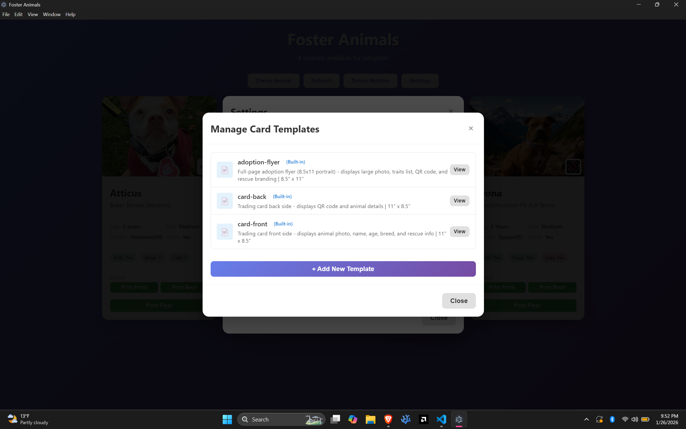
Template Management
View and customize built-in templates or create your own custom templates for cards and flyers.
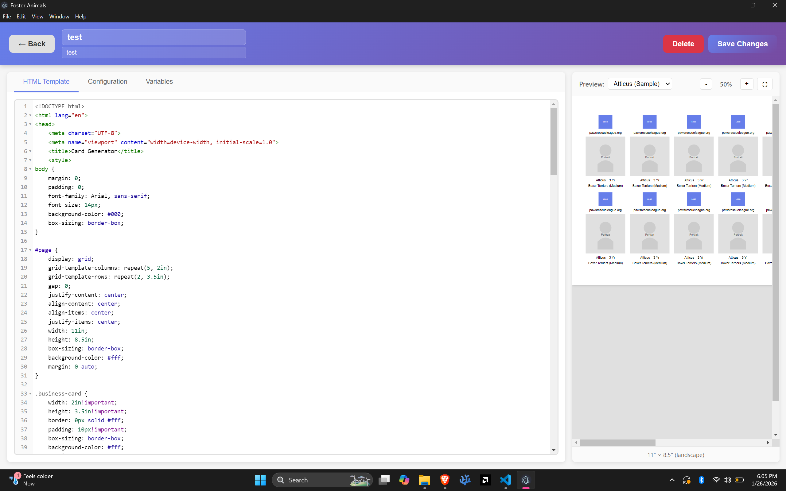
Template Editor
Full-featured template editor with CodeMirror syntax highlighting, live preview with real animal data, and JSON configuration for page size, DPI, and preprocessing options.
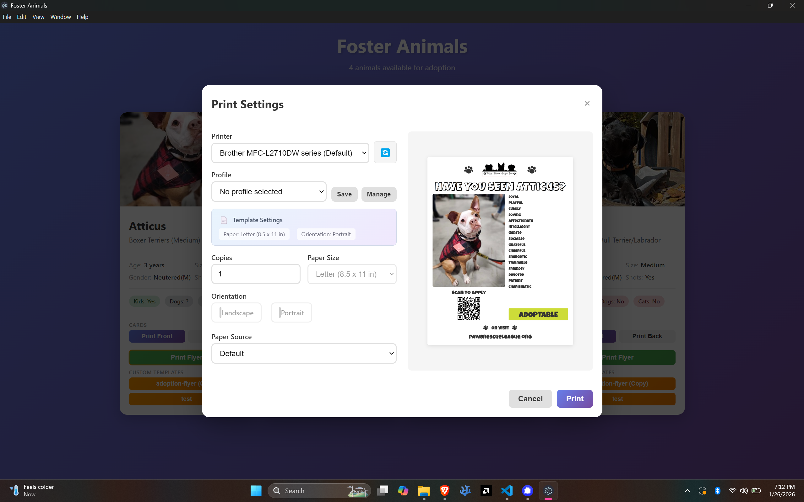
Print Adoption Flyers
Print full-page adoption flyers with a single click. Perfect for bulletin boards, vet offices, and community spaces.
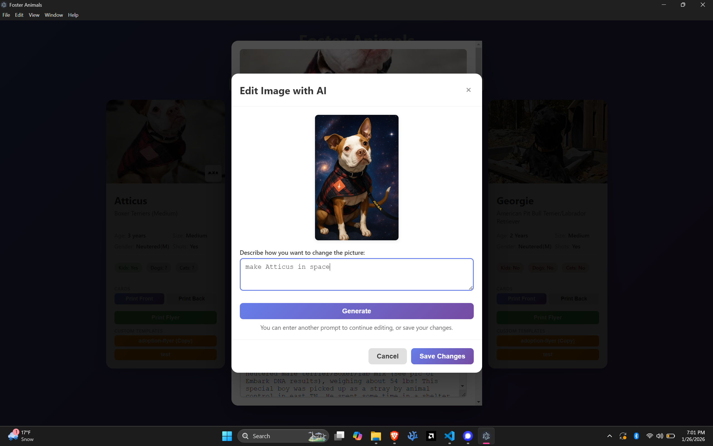
AI Image Editing
Enhance animal photos using AI. Describe changes in natural language like "make the background a sunny park" and watch the magic happen.
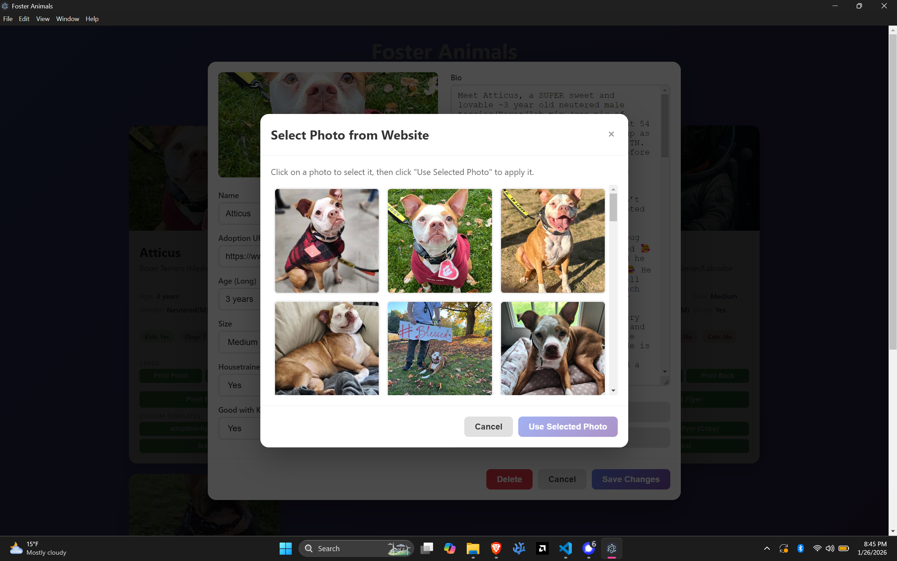
Website Photo Selection
Choose from all available photos on the adoption website. Scrapers extract every photo from the animal's profile so you can pick the perfect shot.